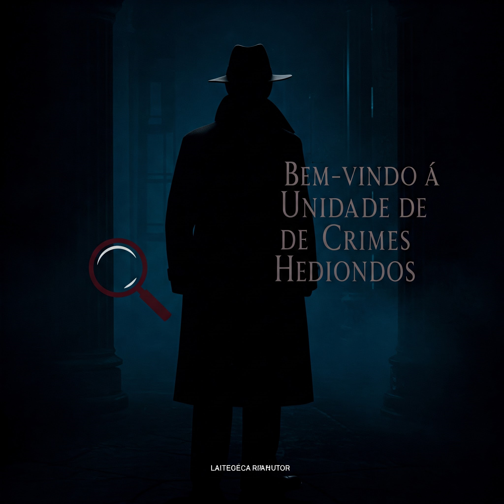
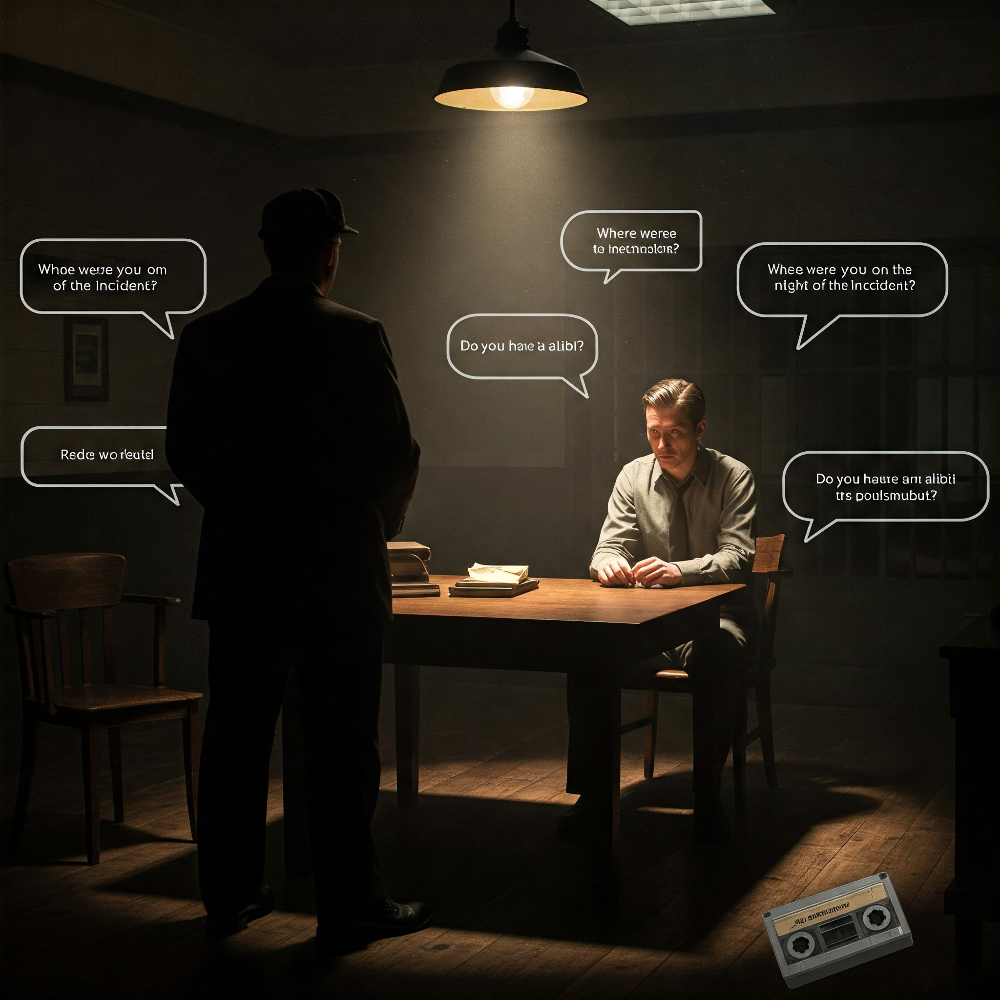

DETECTIVE NOIR
UNIDADE DE CRIMES HEDIONDOS
UNIDADE DE CRIMES HEDIONDOS
v1.0.0 | © 2025 Unidade de Crimes Especiais - (Criado por Nilson Gomes)
Assassinato no Hotel Luxor
Vítima: Jonathan Blackwell
Idade: 42
Local: Hotel Luxor, Nova York
Hora: 02:15 AM
O corpo foi encontrado no quarto 314 do hotel. Vítima apresentava múltiplas facadas e sinais de luta. Objeto cortante não encontrado no local.
Tempo de viagem: 8 horas
Você está prestes a acusar um suspeito. Certifique-se de ter evidências suficientes.
Bem-vindo à Unidade de Crimes Hediondos. Como detetive, seu trabalho é resolver casos complexos seguindo pistas, interrogando suspeitos e reunindo evidências.
Use o mapa para viajar entre diferentes locais em busca de pistas. Cada local pode conter informações valiosas ou testemunhas para interrogatório.

Colete pistas para preencher seu registro. Cada suspeito tem um alibi, motivo e relação com a vítima que você precisa investigar.
Interrogue suspeitos para descobrir inconsistências em suas histórias. Perguntas inteligentes podem revelar informações cruciais.

Quando tiver evidências suficientes, acuse o culpado. Acusações prematuras podem resultar em libertação do verdadeiro criminoso.